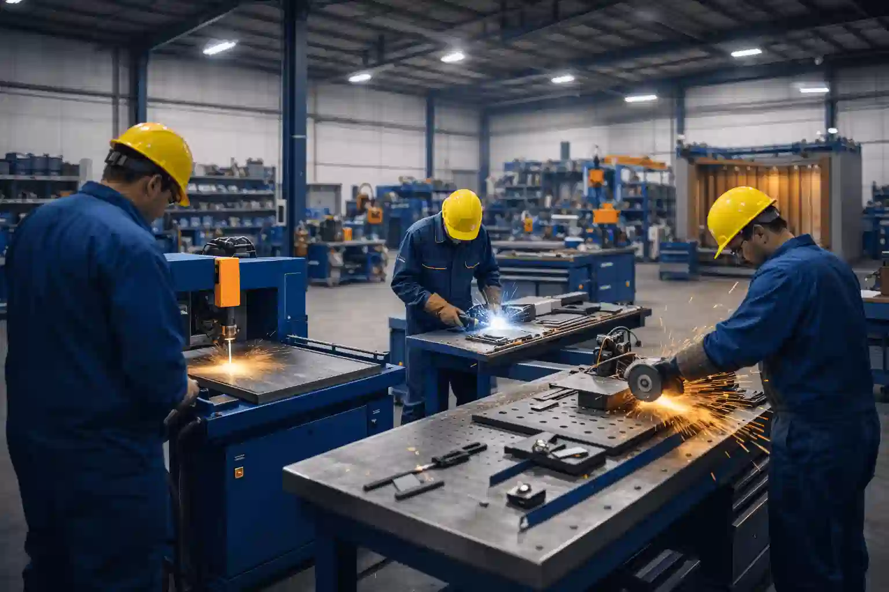
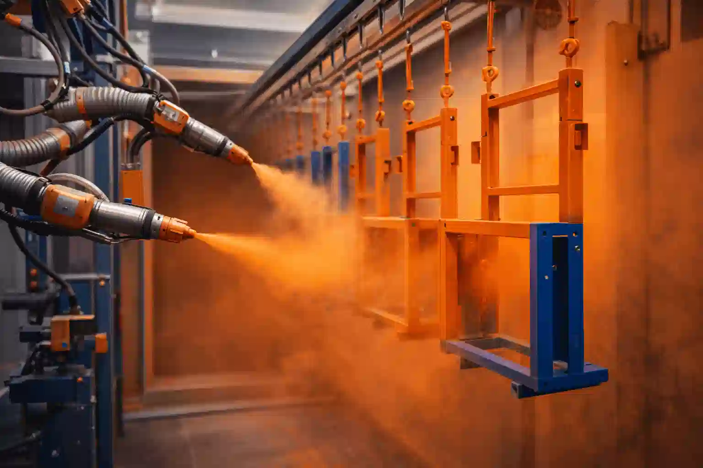
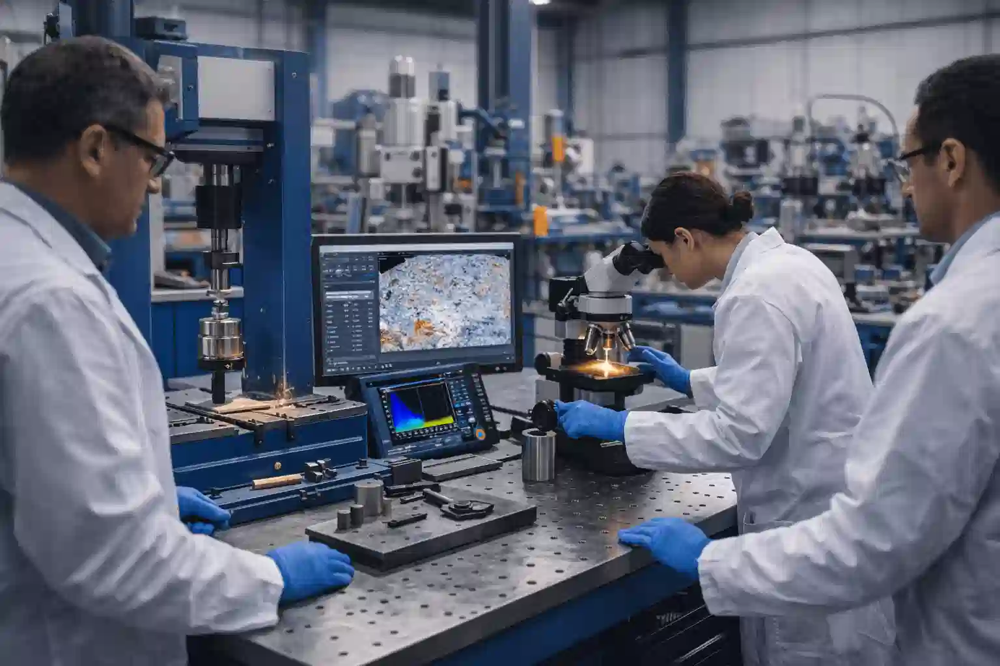

Fr
Fr العربية
العربية En
EnNotre Expertise en Ingénierie
Formation, R&D et Conseil Industriel
Accompagner ingénieurs, entreprises industrielles et chercheurs grâce à un savoir appliqué, l’innovation mécanique et industrielle, des solutions matériaux et des services de contrôle.
Relier les connaissances académiques à la pratique industrielle
Transformer la recherche et l’expertise en ingénierie en solutions concrètes
Avec un focus sur la qualité, l’innovation et l’efficacité industrielle
Notre Vision & Mission
Chez Shaira @ Shayra ProTech, nous combinons expertise académique, savoir-faire industriel
et compétences avancées en ingénierie pour fournir des solutions concrètes en formation,
recherche scientifique et développement industriel.
Nous visons à rapprocher théorie et pratique, transformant le savoir ingénierie
en valeur industrielle opérationnelle, avec un accent sur la qualité, l’innovation et la durabilité.
Nos Services Principaux
🎓 Formation Professionnelle & Développement des Compétences
- Cours et ateliers pratiques en conception mécanique, automatisation, traitements thermiques, finitions de surface et revêtements.
- Programmes industriels et académiques personnalisés pour ingénieurs, techniciens et étudiants.
- Parcours pédagogiques combinant théorie, exercices pratiques et projets réels.
- Encadrement de projets de fin d’études et initiatives de recherche.
- Transfert de savoir-faire selon les standards industriels avec attention à la qualité et à la sécurité.
⚙️ Conception Mécanique & R&D
Industrielle

- Conception et développement de systèmes mécaniques et de machines de production sur mesure.
- Modélisation, prototypage et validation expérimentale des solutions d’ingénierie.
- Amélioration des processus et optimisation de l’efficacité de production.
- Conception produit assistée par CAO et gestion de production, intégration ERP/MRP.
- Relier la recherche scientifique à la production avec focus sur la performance et la fiabilité.
🔬 Ingénierie des Matériaux & Traitements de Surface
- Tests et évaluation de métaux, composites et revêtements industriels.
- Traitements thermiques et de surface pour améliorer les propriétés mécaniques.
- Lignes industrielles de revêtement en poudre et développement de procédés.
- Contrôle non destructif (CND), méthodes ultrason et courant de Foucault.
- Soutien à la mise en place de laboratoires pour la R&D et les tests matériaux.
💼 Conseil Industriel & Support Technique
- Analyse des problématiques industrielles et proposition de solutions efficaces.
- Amélioration de la maintenance, fiabilité et performance des équipements.
- Soutien au transfert technologique et au développement des procédés industriels.
- Conseil pour partenariats et implantation sur les marchés Europe et Moyen-Orient.
- Intégration d’outils numériques et systèmes de suivi dans les lignes de production.
Secteurs desservis
- Industrie mécanique et manufacturière
- Laboratoires de recherche scientifique et ingénierie
- Universités et centres de formation
- Startups et projets industriels
- Lignes de production et finitions de surface
Pourquoi nous choisir
🎓 Double Expertise
Expérience académique et industrielle fournissant des solutions concrètes.
💡 Innovation Appliquée
Relier directement la recherche aux besoins industriels.
🌍 Expérience Internationale
Projets réalisés en France, au Moyen-Orient et ailleurs.
⚙️ Approche Intégrée
De l’analyse et la conception à la mise en œuvre et aux tests.
🧪 Expertise Multidisciplinaire
Conjuguer conception mécanique, science des matériaux et procédés industriels.
🤝 Partenariat Long Terme
Accompagnement continu des clients et transfert de connaissances.
Outils & Techniques
Nous utilisons des outils certifiés d’ingénierie et industriels pour garantir précision, fiabilité et applicabilité industrielle.
- CAO / CAD : SolidWorks, Solid Edge, CREO, FreeCAD
- Gestion de Production : ERP / MRP (Odoo)
- Traitements Thermiques et de Surface
- Contrôle Non Destructif (CND / NDT)
- Prototypage, Fabrication et Analyse de Performance
Exemples de Projets
- Programmes de formation industrielle en conception et automatisation
- Machines sur mesure et lignes de production spécialisées
- Projets R&D en ingénierie des matériaux
- Optimisation des procédés industriels et résolution de problèmes
Notre Méthodologie
1️⃣ Analyse
Compréhension approfondie des besoins techniques, industriels ou pédagogiques.
2️⃣ Conception
Solutions d’ingénierie ou programmes de formation conçus pour répondre aux besoins spécifiques.
3️⃣ Mise en œuvre
Modélisation, expérimentations, fabrication ou formation pratique sur le terrain.
4️⃣ Évaluation
Tests, amélioration de la performance et transfert de connaissances au client.
Transformer le savoir en applications industrielles
Nous collaborons avec entreprises, universités et centres de recherche pour transformer les idées en solutions d’ingénierie durables et à valeur industrielle réelle.
Contactez-nous